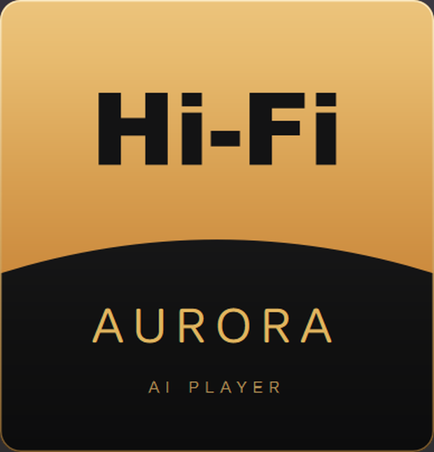

01 AI MASTERING
AI 母带
音色跟着音源走。
根据播放的音源智能匹配音色。再按自己的喜好，分别选择空间音频、动态增强与响度平衡。
声音增强可分别选择，也可以打开九段 EQ，保留自己的手动调节。
SOURCE → TONE功能示意
播放音源→匹配音色
AI 母带，匹配播放音源的音色。AI 懂你，围绕聆听偏好推荐音乐。再用辉光、频谱和 EQ，安排自己的聆听空间。
Windows 2.1.24 · 64 位正式版。Android 0.3.1 · 早期测试版。鸿蒙版尚未发布，各版本功能有所不同。

AuroraPlay 品牌视觉AI 母带负责音色匹配，AI 懂你围绕聆听偏好做推荐。把声音怎么听、下一首听什么，放在同一个播放器里。
根据播放的音源智能匹配音色。再按自己的喜好，分别选择空间音频、动态增强与响度平衡。
声音增强可分别选择，也可以打开九段 EQ，保留自己的手动调节。
学习聆听偏好，让音乐推荐有自己的方向。暂停学习后，仍可以按照已经积累的偏好继续推荐。
从已有偏好继续探索，在熟悉的音乐之外，为下一次发现留一点空间。
封面、歌词与声音控制，
让喜欢的音乐成为眼前的主角。
Windows 界面预览 · 使用示例素材
透光强度、频谱灯光、氛围颜色、动态方式与面板材质，在同一个设置面板里选择。截图展示暖金与环绕风格。
九段自定义均衡器，从 60 Hz 到 16 kHz。每段提供 −12 dB 到 +12 dB 的调节范围，并可恢复平直设置。
EQ 界面示例 · 按你的口味自由调节。
双声道 VU 表与音色预设集中在侧栏，常用调节触手可及。
熟悉的封面、清楚的歌名与播放进度。打开自己的音乐收藏，让喜欢的旋律随时陪伴。